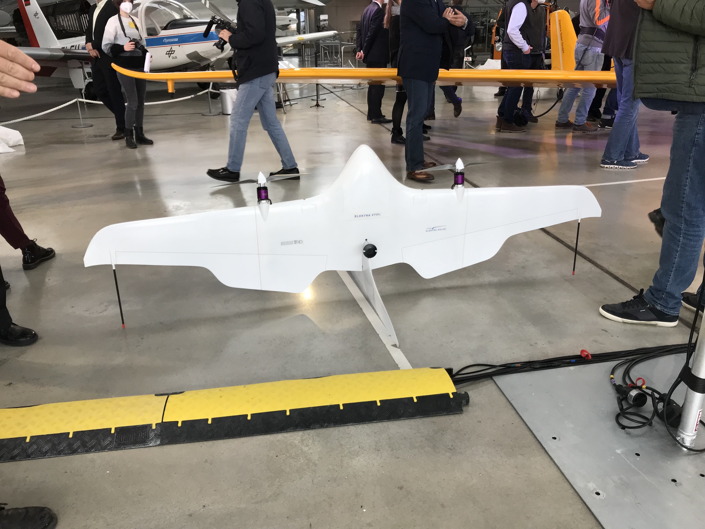

Flyonic
An environment for VTOL drone experiments. The environment contains VTOL models, controllers, visualizations and intelligent algorithms that adapt the cognitive abilities from birds to future drones. The focus is on developing modern controls that operate the aerodynamic limits of the aircraft and push their performance beyond the current limits.
 |  |
If there are any issues I appreciate feedback. finn.sueberkrueb@flyonic.de Here is the documentation regarding the documenter.jl.
Units
| mps | meter per second |
| m | meter |
| s | seconds |
| N | newton |
| Nm | newton meter |
| m^2 | square meter |